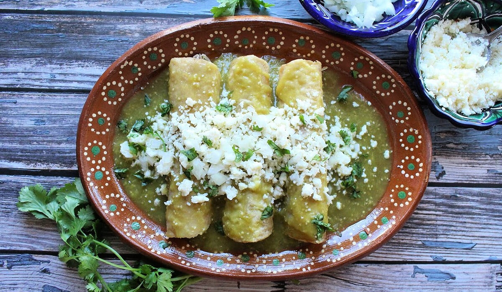

HOME
Enchiladas

Description
These Enchiladas Verdes will transport you to a small pueblo in the Mexican countryside. This traditional recipe is packed with flavor.
These Enchiladas are creamy, cheesy and delightfully spicy.
Ingredients
- Corn tortillas
- Tomatillos
- Jalapenos
- Cilantro
- Shredded Chicken
- Shredded Mexican Cheese Blend
Steps
- Pre-Heat Oven to 425 degrees farenheit
- Acquire a large casserol dish
- Briefly fry the tortillas in canola oil, just so they become soft and malleable
- Lay down the tortillas in the dish, providing even coverage of the dish
- Spread 1/3 the shredded chicken on top of tortillas
- Pour green sauce over chicken
- Add a layer of cheese
- Repeat steps 3-7 until you have 3 layers completed
- Bake in oven for 35 minutes